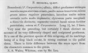

Click on images to enlarge
{kind=link}

Paropsis bicolora, description
Name
Trachymela bicolora (Blackburn, 1897)
Type specimen
Not examined.
Original description
[Original description shown in figure, translated from Latin using ChatGPT]
Related to the preceding species (P. carpentariae); it differs in having the prothorax on each side ornamented with a large very black spot, being slightly less transverse, less coarsely and less rugosely punctured, with the sides much less rounded and in no way flattened; the marginal portion of the elytra scarcely distinct from the disc; the basal ventral segment less strongly punctured; in other respects as in P. carpentariae.
Notes
T. bicolora is one of a number of species, mostly from the drier inland areas of Australia, that have a transverse ridge across the centre of the elytra. Many of these species are small, and Blackburn states a length of 2 4/5 lines, or 6.3 mm, for his type specimen. He gives the locality as Whitton in New South Wales. Two species with lateral elytral ridges are relatively abundant in this area, Ta10 and Ta71. The size distribution of the former species does not extend past 5.75 mm and thus would exclude the type specimen. However, specimens of Ta71 span the range of 4.9 to 6.6 mm. Blackburns description would fit a typical Ta71 specimen quite well.
References
Blackburn, T. 1897, "Revision of the genus Paropsis. Part II", Proceedings of the Linnean Society of New South Wales, vol. 22, 166-189 (page 179).
Copyright © 2026. All rights reserved.